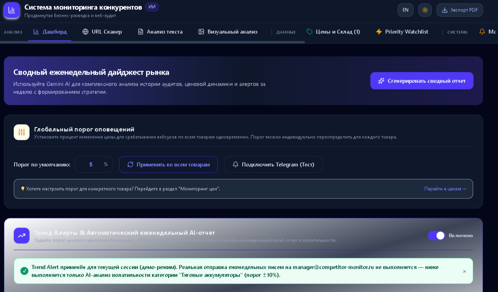

03 / Automotive
Автомобили и автозапчасти
Помочь клиенту с выбором. Передать менеджеру точный запрос.
AI-ассистенты для автодилеров, магазинов запчастей и сервиса: уточнение запроса, поиск по каталогу, подготовка карточек и ответы по базе знаний.
Задачи бизнеса
Где можно убрать рутину
Заполнение карточек товаров отнимает время.
Одни и те же вопросы о доставке и сервисе повторяются.
Проекты и применение
Основа уже есть
Ниже — возможности моих проектов и то, как их можно адаптировать под ваш процесс. Подключение данных и сервисов компании входит в отдельную настройку.
01
AutoDealer AI Assistant
Продажи и сервис в одном API
Что есть в проекте
MVP на FastAPI с ролями Sales, HR и Service: сценарии цен, тест-драйва и записи в сервис.
Как применить в компании
Подключить актуальные предложения дилера и согласованные правила передачи заявок. Доступ к CRM и календарю проверяется на тестовом контуре.
02
Auto Parts Agent
Уточнение запроса и поиск детали
Что есть в проекте
Агент уточняет марку, модель и год, ищет в локальном каталоге и возвращает название, артикул и цену.
Как применить в компании
Подключить каталог магазина. Совместимость и применяемость детали подтверждать по данным каталога или менеджером; VIN-проверка требует отдельной интеграции.
03
PartsGen MVP
Карточки товаров из фото и текста
Что есть в проекте
Прототип анализирует фото и описание поставщика, формирует карточку и экспортирует JSON или CSV.
Как применить в компании
Настроить обязательные поля и формат импорта магазина. Артикулы, характеристики и применяемость проверять перед публикацией.
04
RAG-бот магазина
Ответы по документам компании
Что есть в проекте
Поиск по базе знаний о доставке, оплате, возвратах и инструкциях для менеджеров.
Как применить в компании
Загрузить действующие правила магазина. Для фактического статуса заказа отдельно подключить учётную систему; при нехватке данных передавать вопрос человеку.
Первый шаг
Начать с одного сценария подбора
Запрос покупателя → уточнение автомобиля → поиск в тестовом каталоге → карточка результата → подтверждение менеджером. Проверяем известные позиции и запросы, на которые в каталоге нет ответа.
- Что понадобится
- Образец каталога, типовые запросы покупателей, правила подбора и условия доставки.
- Что измерим
- Полнота собранных данных, точность результатов по контрольному каталогу и время подготовки ответа.
Из портфолио
Competition Monitor
Пример интерфейса исходного проекта. Отраслевые сценарии и подключения обсуждаем под ваши данные.

Обсудим процесс
С чего начать в вашей компании?
Напишите, где сейчас возникает ручная работа и какие сервисы вы используете. Я предложу первый сценарий и состав работ; сроки и стоимость согласуем после разбора задачи.